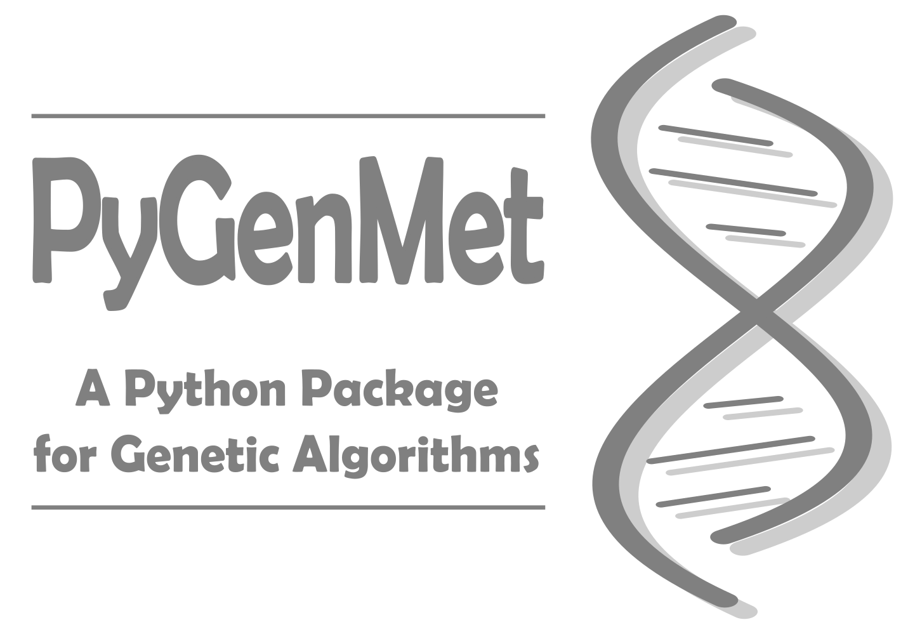

PYGENMET#
GENETICS ALGORITHMS WITH PYTHON

Ibon Martínez-Arranz
2024-06-09


About me#
I am Ibon Martínez-Arranz and I got my BSc. in Mathematics from the University of the Basque Country (EHU/UPV) and performed a MSc. in Current Applied Statistics Techniques and a MSc. in Mathematical Modeling Research, Statistical Analysis and Computing Sciences. In 2004, I joined the Basque Country Health Service (The Department of Health of the Basque Country Government and Osakidetza) as a data analyst and my work was mainly focused on the epidemiological report of renal patients. When I joined OWL Metabolomics in 2010, first I worked as a researcher in the Metabolomics Department and in 2017, I became the head of the Data Science Department, being responsible for prediction and statistical computation management since then. This high experience provide support to metabolomics services, laboratory processes, data handling, R&D projects and technology transfer processes.
Introduction#
This repository contains the documentation of pygenmet, a genetic algorithms package developed in Python.
This book includes a collection of functions and examples, written in Python, that shows how to use the PyGenMet package.
Rendering the manual#
To compile or generate the documentation with MkDocs try this from console:
Clone the repository:
$ git clone https://github.com/imarranz/pygenmet.git
Render the manual with MkDocs:
$ mkdocs build
Citation#
I publish each release of PyGenMet on Zenodo and here is a list of version:
| Version | Date | DOI |
|---|---|---|
| v1.0.0 | August 22, 2021 |
If you'd like to cite this package, instead of a specific version, use the following DOI: https://doi.org/10.5281/zenodo.5233539. Here is the bibtex entry for the book:
@software{ibon_martinez_arranz_2021_5233539,
author = {Ibon Martínez-Arranz},
title = {imarranz/pygenmet: v1.0.0},
month = aug,
year = 2021,
publisher = {Zenodo},
version = {v1.0.0},
doi = {10.5281/zenodo.5233539},
url = {https://doi.org/10.5281/zenodo.5233539}
}